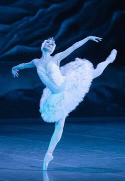
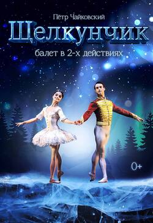
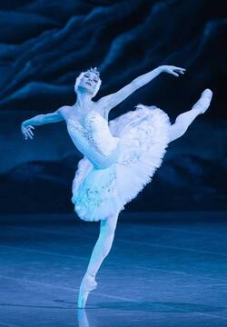
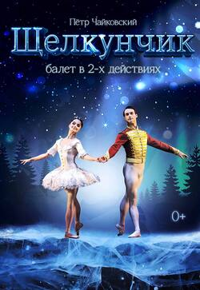

Известные балетные спектакли
Лебединое озеро
Лебединое озеро - это классический балет, поставленный на музыку Петра Ильича Чайковского.
Щелкунчик
Щелкунчик - это волшебный балет, также написанный Чайковским, который исполняется на Рождество.
Лебединое озеро - это классический балет, поставленный на музыку Петра Ильича Чайковского.
Щелкунчик - это волшебный балет, также написанный Чайковским, который исполняется на Рождество.
